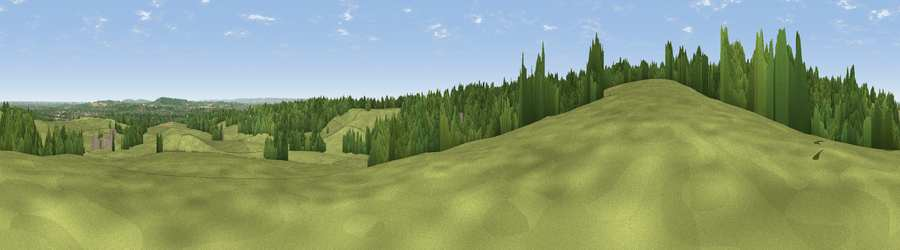

Viewpoint near South Hinksey
#32723 in England · top 50% of its area beats it · near South Hinksey · path 66 mWhere it is
The exact computed spot (SP 48980 02895). Click the marker for map links.
Public access: the nearest public right of way is about 66 m away — the final stretch may cross private land. Computed from Natural England's CRoW access layer and OpenStreetMap rights of way — not the legal definitive map. Always verify locally.
The view, rendered

A 360° render of this exact spot computed from the terrain model, tree cover and land cover — summer colours, afternoon light, calibrated against photographs of famous viewpoints. Real trees, hedges and buildings will differ in detail.
The panorama
Grey silhouette: terrain skyline in each direction (720 bearings, Earth curvature and refraction included). Dashed green: skyline with trees (+15 m) and buildings (+8 m) as obstacles. Blue strip: how far the ground is visible on each bearing.
Where the view opens
Wedge length = distance to the farthest visible ground on that bearing (vegetation-aware). Rings at 10, 25 and 50 km.
What fills the view
52% grassland · 39% woodland · 5% cropland · 4% built-up
Angular shares of the visible panorama (visual magnitude), not map area. Landscape diversity 0.43 (0–1 Shannon).
Key numbers
More beautiful places nearby
The staircase of upgrades: each row has a higher view potential than everything closer. Driving times are estimates from straight-line distance, calibrated against real road routing — check an actual route before setting out.
| Place | Direction | Drive | Score |
|---|---|---|---|
| Millennium Beacon | NNW · 2 km | ~5 min | 47.1 |
| Viewpoint near Swinford | NW · 7 km | ~14 min | 64.2 |
| Round Hill | SE · 13 km | ~24 min | 70.1 |
| Viewpoint near Watlington | ESE · 23 km | ~38 min | 70.6 |
| Viewpoint near Lewknor | ESE · 24 km | ~39 min | 70.8 |
| Viewpoint near Lewknor | ESE · 24 km | ~40 min | 74.4 |
| Viewpoint near Woolstone | SW · 25 km | ~41 min | 76.7 |
| Martinsell viewpoint | SW · 50 km | ~71 min | 76.9 |
51.72264, -1.29233 · source: osm viewpoint · position refined by local search. Computed location — check access rights before visiting.